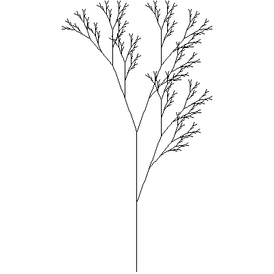

Lシステムの文法発見と誤り訂正
Lシステムとは
Lシステムとは再帰構造を有する文法規則であり、生物の形状を描画するためにしばしば用いられます。 その文法規則は基本的には以下のような記述によって定義されます。
-----------------------
初期記号列：A
置換回数: 10
A → ○○○
B → ▲▲▲
-----------------------
上記の定義は初期記号を「A」として、Aを○○○に置換、Bを▲▲▲に置換という一連の処理を１０回行うというものです。
映画やゲームで描画される草木は、部分的にLシステムによって生成されます。
文字列の図への変換はタートルグラフィックスによって行われます。
タートルグラフィックスでは、「F」という記号に直線を描画せよという処理を割り当てたりします。
例として以下のLシステムにより生成された文字列を図１に可視化しました。
-----------------------
初期記号列：X
置換回数: 6
X → F[+X]F[-X]+X
F → FF
-----------------------

Fig.1 the result of visualization
このように趣のある草木が生成されます。
なお、図1の元となるLシステムはLシステムの提唱者Lindenmayer氏らによる文献(The algorithmic beauty of plants)で紹介されます。